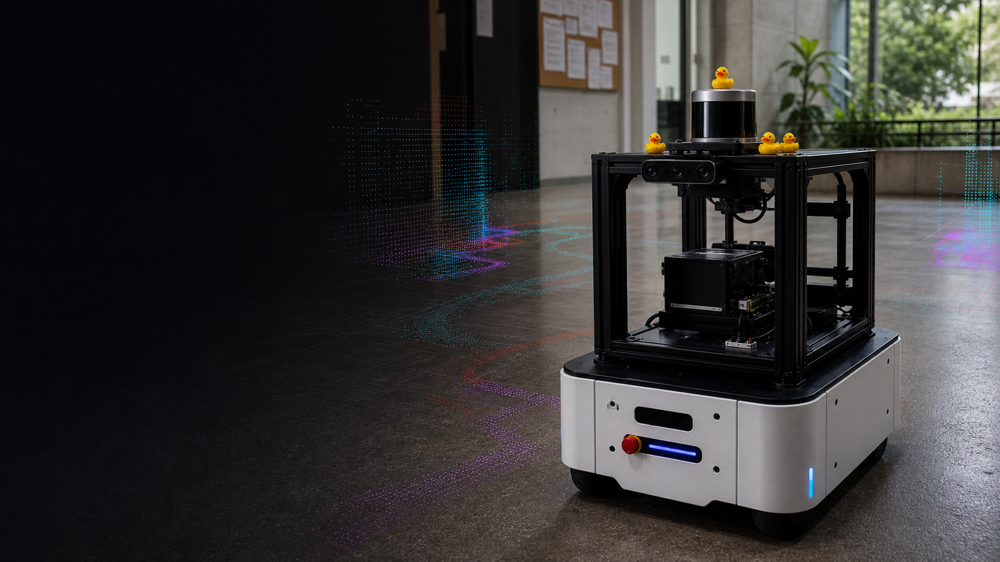
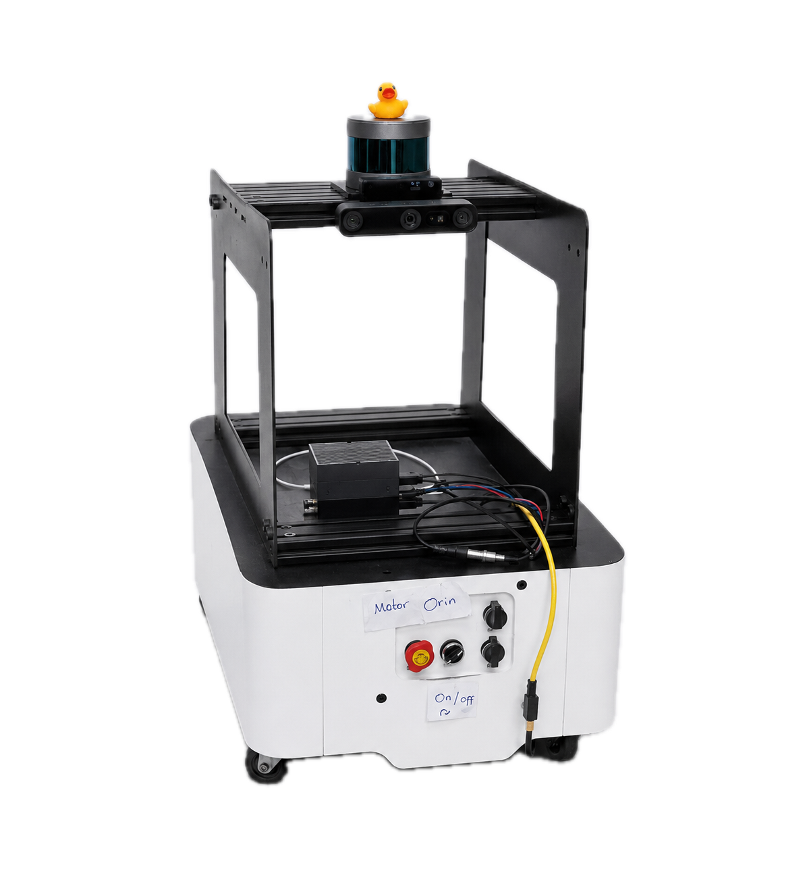
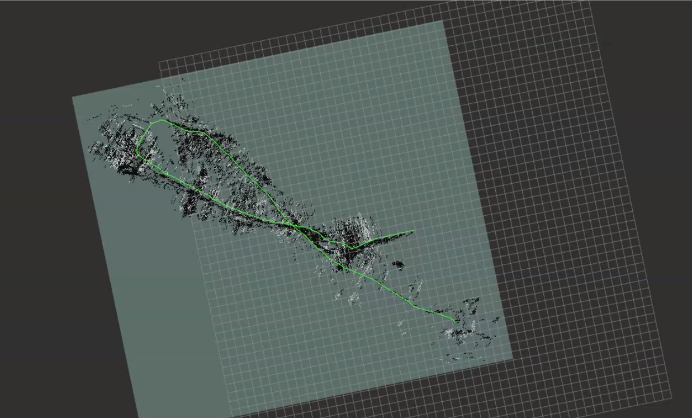
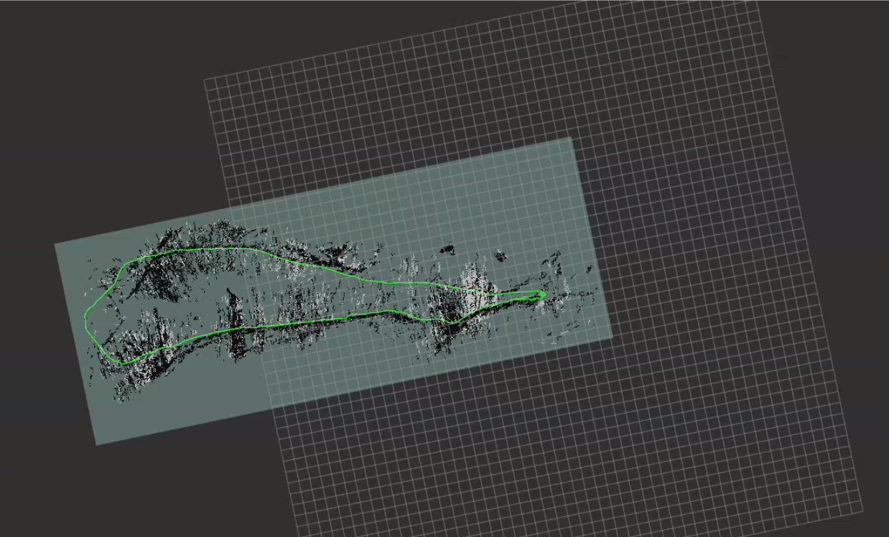

Stereo Perception
OAK-D Pro depth sensing

MOBOROBOT
A physical robot that builds its understanding of a space, visualizes safe movement through costmaps, then systematically covers reachable regions without GPS or pre-built maps.
Overview

Moborobot - mobile robot platform
RGB-D + stereo + IMU
Visual-inertial odometry
Occupancy map + loop closure
Costmaps + navigation planning
Depth from camera
Coverage path from target area
via /cmd_vel
METHODS
We aligned the workspace around standard ROS frames, connecting map, odom, base_link, and camera frames so sensor drivers, RTAB-Map, and Nav2 shared the same pose model.
The motor driver was tested with the standard /cmd_vel topic. Containers on the same subnet and ROS_DOMAIN_ID could publish velocity commands from any part of the system.
We selected RTAB-Map because it supports RGB-D visual odometry, SLAM, loop closure, and map generation from the OAK-D camera's depth and visual streams.
Nav2 handled planning, control, smoothing, behavior recovery, waypoint following, lifecycle management, velocity smoothing, and local/global costmaps.
OpenNav Coverage and Fields2Cover generated coverage paths from polygon field boundaries, producing swaths and paths for visualization and execution through Nav2.
Results
RTAB-Map SLAM outperformed pure wheel odometry on a 25.16m closed-loop course. Lateral deviation stayed below 0.2m compared to 1.0m for odometry alone, and the estimated path dimensions matched the 5.10 x 7.48m ground truth to within 8%.


SLAM & LOOP CLOSURE DEMO
NAVIGATION DEMO
COVERAGE DEMO
The robot works through the environment in repeatable passes, using the map and costmap constraints instead of GPS or a pre-built route.
TEAM